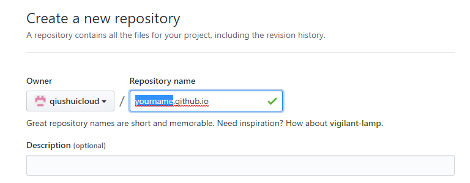
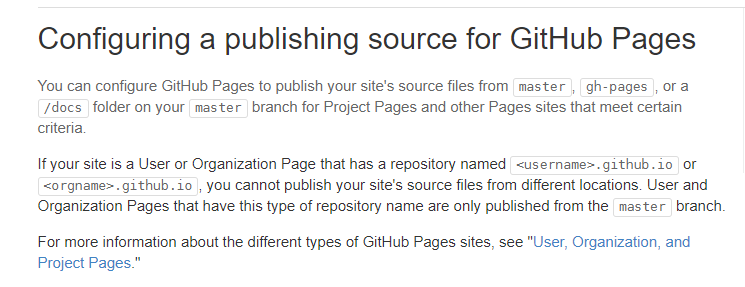
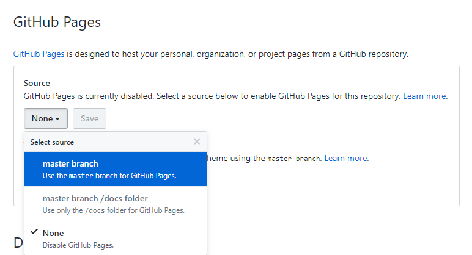
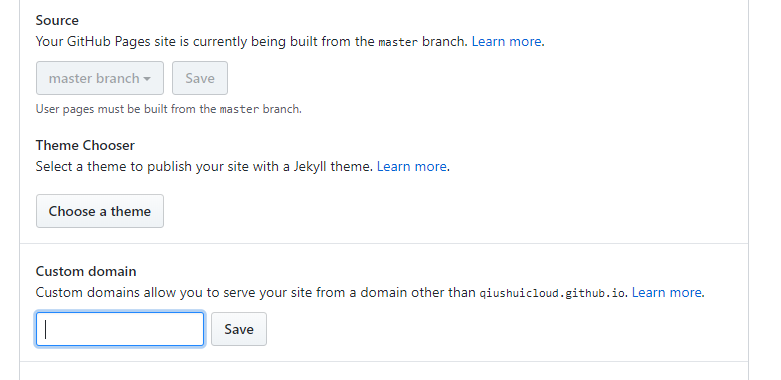

什么是 Hexo？
Hexo 是一个快速、简洁且高效的博客框架。Hexo 使用 Markdown（或其他渲染引擎）解析文章，在几秒内，即可利用靓丽的主题生成静态网页。
准备环境
安装Hexo
在命令行执行
1 | npm install hexo-cli -g |
初始化Hexo
在你电脑上新建一个目录，用命令行进入该目录执行
1 | hexo init <folder> |
新建完后，目录结构如下
1 | . |
配置Hexo
在_config.yml可以修改大部分配置。
运行Hexo
在博客目录的命令行执行
1 | hexo server |
启动Hexo
现在可以打开地址http://localhost:4000
按Ctrl+C停止运行
当配置文件变动或有新的资源修改时，会自动刷新，不必重启。
写作
在博客目录的命令行执行
1 | hexo new post [文章题目] |
在/source/_post/ 下会生成一份md文件，在此文件内写作。
在生成的md里，开头有一份yml的配置
1 |
|
把--- 换成;;; 括起来也可以使用json格式的配置
使用Github Pages托管博客网站
登录自己的Github账户，新建一个Repository。仓库名称使用yourname.github.io格式。

根据Github Pages的说明，yourname必须是自己的用户名或者组织名才行。

在_config.yml站点配置文件deploy节点配置git远程仓库信息
1 | # Deployment |
分别依次执行下列命令
1 | hexo clean # 主要是清除之前生成的public和db.json两个缓存 |
在本地会生成一个public文件夹，即是整个博客站点的所有静态文件，并且会提交给github远程仓库。
在Github你的Repository中的Settings里配置使用master分支代码作为Github Pages站点。

至此应该能访问https://youname.github.io 了。
使用自己的域名访问博客站点
去购买域名平台的域名管理中设置自己的域名解析为CNAME类型并且值指向你的github.io站点域名。
在Github的Repository Settings里修改使用自己的域名绑定。

更多详细配置请浏览Hexo官方文档